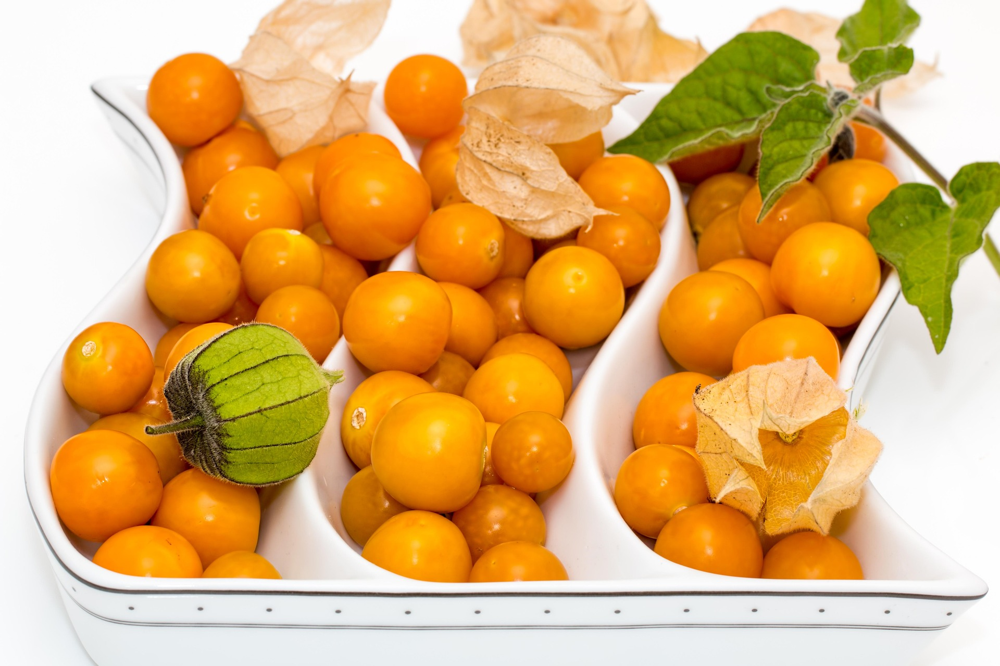

Alchechengi: uso tradizionale, proprietà e avvertenze

Nota già a Dioscoride e Galeno, la pianta è diffusa in Asia, Europa e nel Mediterraneo. Nella tradizione simboleggia la protezione e la vita che permane oltre la morte. Nell'antichità era sacra a Venere e usata per la protezione della casa.
Proprietà attribuite dalla tradizione
- Contiene vitamina C in quantità notevole, carotenoidi e luteina, antiossidanti oggetto di studi di laboratorio
- Contiene tannini e mucillagini, responsabili delle proprietà astringenti
- Tradizionalmente attribuito a un'azione diuretica
- Tradizionalmente usato come sostegno delle vie urinarie: studi preliminari suggeriscono un ruolo nella prevenzione dei calcoli
- Oggetto di studi di laboratorio per attività antimicrobica e antinfiammatoria
- I carotenoidi sono associati alla salute della vista
Uso tradizionale
Il frutto è considerato un alimento sicuro, da consumare in quantità moderate nell'ambito di un'alimentazione varia. Tradizionalmente il frutto essiccato e polverizzato è usato come integratore.
Avvertenze e controindicazioni
Il frutto non presenta particolari controindicazioni, ma può interferire con alcuni farmaci, come i diuretici. Le foglie che circondano il frutto contengono solanina, tossica in dosi elevate: non vanno consumate.
Le proprietà sono riportate come attribuzioni tradizionali o come oggetto di studi, senza valore di cura.